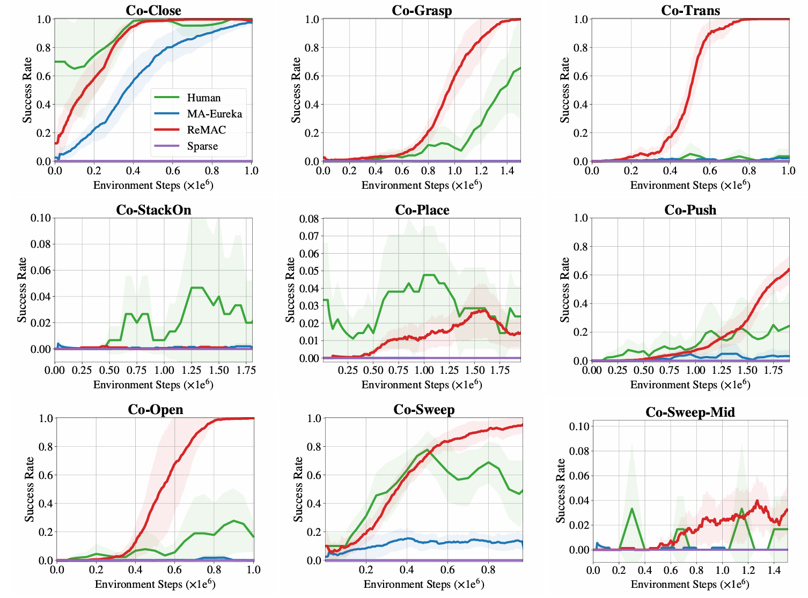

Experiments
We thoroughly evaluate ReMAC and the baselines on ManiCraft to validate the effectiveness of ReMAC.
Evaluation Results

We first compare performance across 9 different tasks in the ManiCraft benchmark. ReMAC demonstrates performance on par with, and in some tasks superior to, MARL algorithms using human-designed reward functions. The MARL algorithms trained with sparse rewards consistently fail to learn effective collaborative policies across all tasks. Besides, ReMAC outperforms the multi-agent extension of Eureka in both efficiency and performance. This advantage stems from two key factors: (i) the construction of reward functions from both agent-level and team-level perspectives, and (ii) the ability of ReMAC to more effectively leverage experience collected from different teams.

ReMAC achieves sample efficiency comparable to or even better than that of manually designed reward functions. MA-Eureka is only able to learn effective collaborative policies on relatively simple tasks, such as Co-Close. When the task difficulty increases even slightly, MA-Eureka tends to fail.